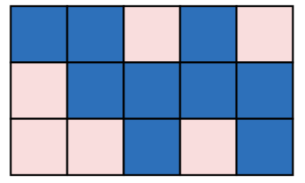

Sam和他的妹妹Sara有一个包含 $n×m$ 个方格的表格。她们想要将其的每个方格都染成红色或蓝色。出于个人喜好，他们想要表格中每个 $2 × 2$ 的方形区域都包含奇数个（1个或3个）红色方格。例如，下图是一个合法的表格染色方案（在打印稿中，深色代表蓝色，浅色代表红色）。

可是昨天晚上，有人已经给表格中的一些方格染上了颜色！现在 Sam 和 Sara 非常生气。不过，他们想要知道是否可能给剩下的方格染上颜色，使得整个表格仍然满足她们的要求。如果可能的话，满足他们要求的染色方案数有多少呢?
输入的第一行包含三个整数 $n,m$ 和 $k$，分别代表表格的行数、列数和已被染色的方格数目。
之后的 $k$ 行描述已被染色的方格。其中第 $i$ 行包含三个整数 $x_i,y_i$ 和 $c_i$，分别代表第 $i$ 个已被染色的方格的行编号、列编号和颜色。$c_i$ 为 1 表示方格被染成红色，$c_i$ 为 0 表示方格被染成蓝色。
输出一个整数，表示可能的染色方案数目 $W$ 模 $10^9$ 得到的值。（也就是说，如果 $W$ 大于等于 $10^9$，则输出 $W$ 被 $10^9$ 除所得的余数）。
3 4 3 2 2 1 1 2 0 2 3 1
8
【数据规模】
对于20%的测试数据，$n,m≤5，k≤5$；对于50%的测试数据，$n,m≤5000，k≤25$；对于所有的测试数据，$2≤n,m≤10^6，0≤k≤10^6，1≤x_i≤n，1≤y_i≤m$。
 Comet OJ
Comet OJ